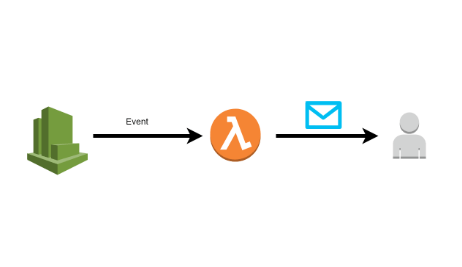
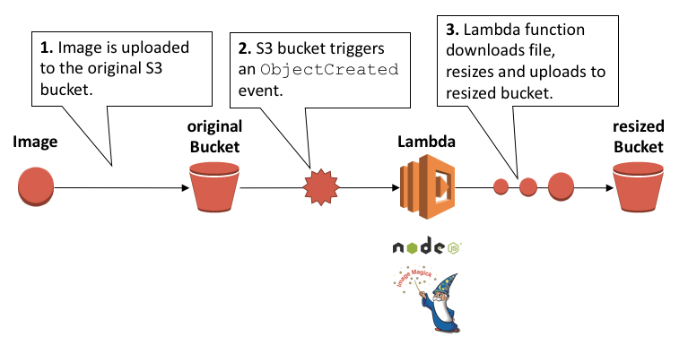
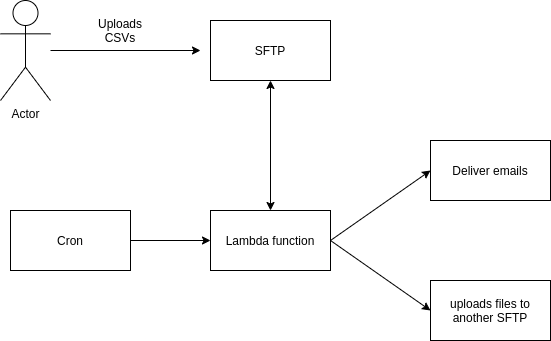

Serverless and lambda functions
Guillermo Guerrero
Follow me on github:
https://github.com/ryanfox1985
July 12th, 2020
What is a lambda function service?
Example with AWS
Motivation
- Costs
- Scalable
- Reduce complexity to the client app.
Our project
Stack
- Docker
- Docker+machine
Docker+machine
Local:

Remote:

Docker+machine example
docker-machine create --driver digitalocean --digitalocean-access-token $DOTOKEN my_server
eval $(docker-machine env my_server --shell bash)
docker run hello-world